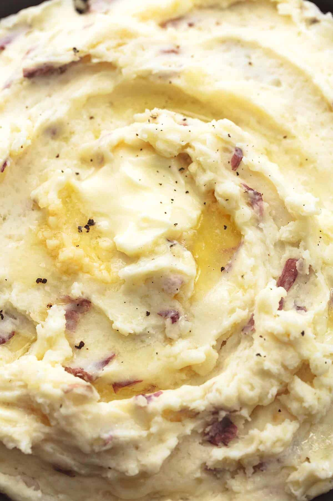

Garlic Mashed Potatoes Recipe
- Grab the following ingredients:
- 3 pounds red potatoes - peeled if desired
- 4 tablespoons butter
- 8 ounces sour cream
- ½ cup whole milk
- 1 tablespoon minced garlic
- 1-2 teaspoons garlic powder - to taste
- 1-2 teaspoons salt - to taste
- ¼ teaspoon cracked black pepper - or 1/8 teaspoon ground black pepper
- Dice and boil the potatoes until reasonably soft
- In a large bowl combine hot (drained) potatoes, butter, milk, sour cream, garlic, salt, and pepper.
- Use a potato masher OR use your hand mixer to mix your potatoes just until all ingredients are combined
- Taste, add salt and pepper if needed. Serve and enjoy!
